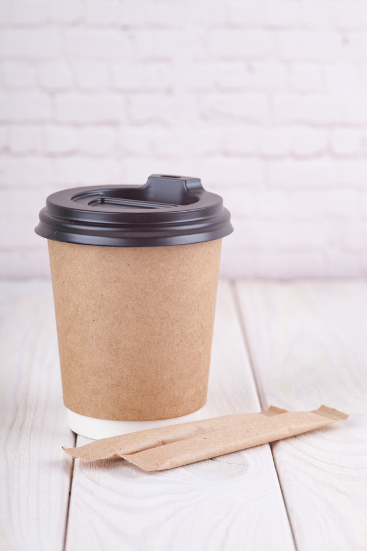
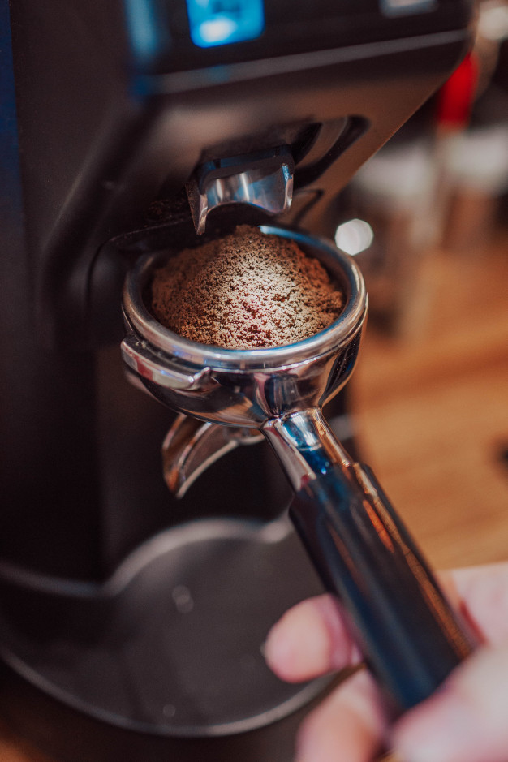
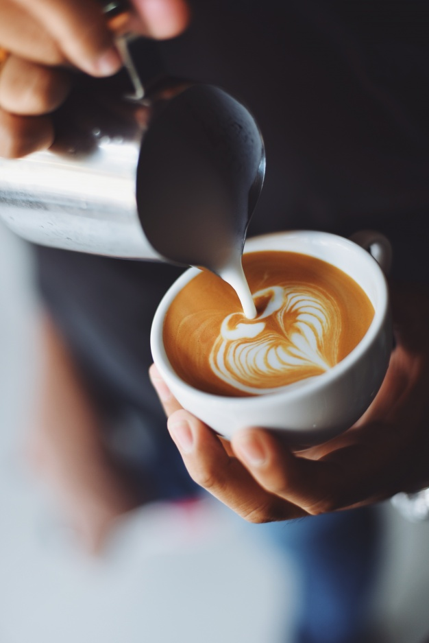

Originalitatea cafelei s-ar afla într-o regiune a Etiopiei numită Koffe și apoi introdusă în lumea arabă prin Egipt și Yemen, unde începe să se cultive în scopuri comerciale.
În trecut cafeaua era considerată aliment și nu băutură. Triburile est-africane măcinau boabele crude de cafea și prin amestecarea cu grăsime animală obțineau o pastă pe care războinicii o consumau pentru a avea mai multă energie în timpul luptelor.
Începând cu anul 1000, renumitul tămăduitor Avicenna, administra cafea în chip de medicament. Boabele de cafea erau fierte și transformate într-o băutură numită qahwa. Etiopienii obțineau un fel de vin din fructele de cafea, prin fermentarea în apă a boabelor uscate.
Primul magazin de cafea s-a deschis la Constantinopol în 1475, fiind numit Kiva Han. Începând cu 1512, efectele stimulatoare ale cafelei au determinat imamii conservatori din lumea arabă să interzică consumul acesteia pentru musulmani. Cu toate acestea, prima cafenea a fost deschisă la Damasc în 1530.
Hills Bros., o companie americană cu sediul în San Francisco, începe în anul 1900 ambalarea în pungi vacuum a cafelei prăjite și râșnite, în detrimentul magazinelor de prăjire și râșnire a cafelei.
Prima cafea solubilă este obținută de David Strang în Noua Zeelandă în anul 1890 și doi ani mai târziu de chimistul japonez Satori Kato.
În Italia Luigi Bezzera inventează aparatul de espresso în 1901, care este perfecționat de Achilles Gaggia în 1946, obținând astfel primul Cappuccino, denumit după asemănarea culorilor alb-negru cu robele călugărilor din ordinul Capucini...
Au trecut multe secole de la descoperirea cafelei, dar ea este încă venerată zilnic. Să observăm evoluția cafenelei noastre...
Un zâmbet din partea unui barista îți poate însenina ziua...

Descoperă-ne din mers...

Descoperă magia boabelor de cafea...

Ți-am stârnit curiozitatea?
Povestea cafenelei noastre
30Ian2010
Multe călătorii
Călătorind prin lume, am găsit în fiecare țară câte o cafenea micuță, care ne atrăgea prin ambianța sa deosebită.Aceste cafenele aveau ceva în comun, pe lângă aromele îmbietoare de cafea ne ademeneau atât căldura și bunăvoința vizitatorilor, care își savurau cafeaua și discutau fără grabă, cât și senzația de dragoste, liniște și libertate.
26Mar2014
Să deschidem o cafenea
Cafeneaua noastră, Impresso Espresso, și-a propus să devină o necesitate zilnică pentru iubitorii locali de cafea, un loc unde se eliberează de stresul zilnic și în același timp un loc confortabil pentru întâlnirile cu prietenii, sau pentru a citi o carte.
26Iun2018
Parteneriate cu producătorii
Ca o bula atemporală, în care timpul capătă o nouă dimensiune, Impresso Espresso pulsează, gândește și respiră povești încântătoare, care aliniate pe etajere, sub formă de bibelouri, cărți și jocuri așteaptă să îți fie povestite.
Cafeneaua noastră este o entitate cu o personalitate complexă, simplă dar și complicată, modestă dar și de actualitate, coerentă dar și plină de pasiune, de dragoste, de curiozitate si de sensibilitate.
1Dec2020
Ne lansăm online
Impresso Espresso este o cafenea cochetă, care oferă o varietate de experiențe plăcute de domeniul cafelei de specialitate, alaturi de alte câteva bunătăți sănătoase, precum biscuitii și batoanele, prăjiturelele proaspete și ceaiurile rare, care, în tandem cu atmosfera industrială te motivează să revii sau să comanzi online.